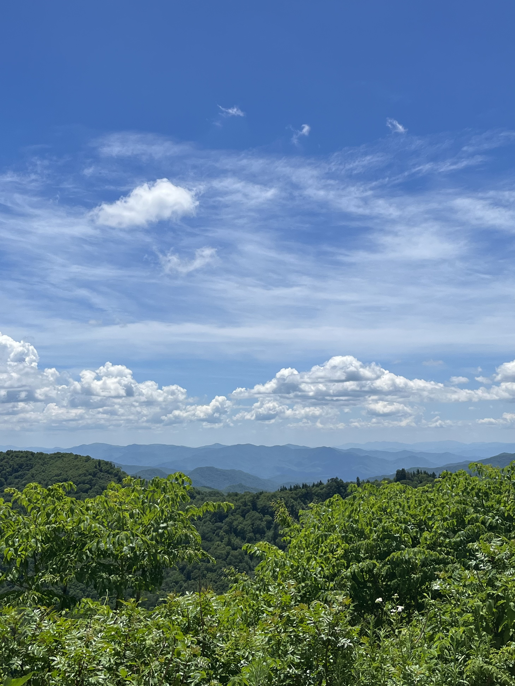

Travel
Tennessee
My Aunt and Uncle live in Knoxville, Tennesse and I have been able to travel there many times and explore many different places there! Im going to show you a few of my favorite places to go!
Dollywood
Dollywood is such a fun experience in Tennessee. I love going on all the rides and checking out the little shops they have there. I also love all the different shows they have there. Last time I went I saw a fireworks and drone light show which was super fun!
The Tennessee River
My aunt and uncle live right on the Tennessee River, and you can even see the Smokey Mountians from the water which I love. One of my favorite things to do there is just go out on the boat all day and relax! We swim, tube, and chill out on the water.
The Smokey Mountians

The Smokey Mountians are such a cool place to explore. I've visited them the last couple of times I have been to Tennessee, and it is such an amazing expereince. I even have been able to stay in a cabin in the mountains with my family and it was so pretty.